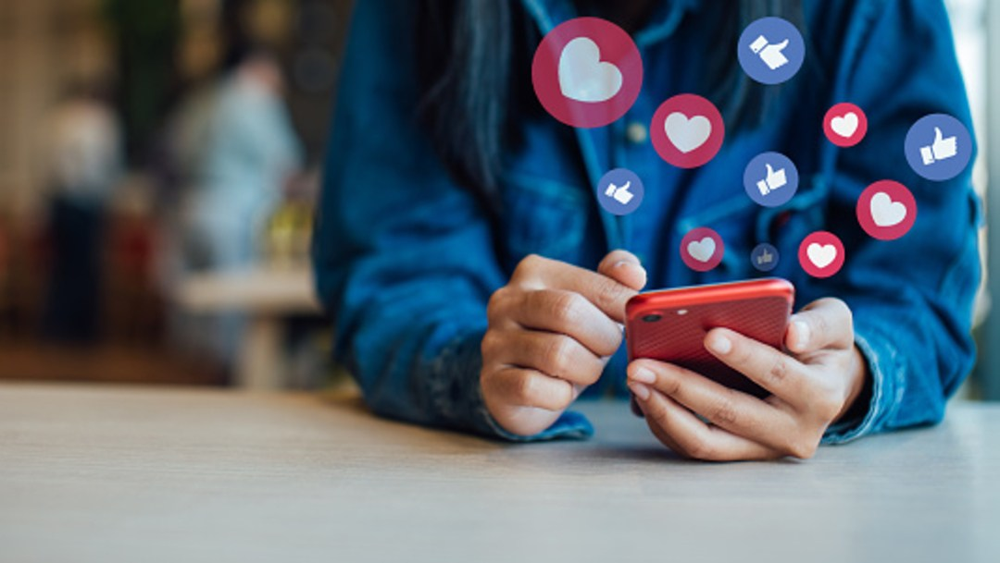

|
En tiempos de cuarentena, las plataforma y el uso de las redes sociales fueron indispensable, las redes sociales crecieron de una forma rápida influyendo a una gran cantidad personas. Las personas aprovecharon este tiempo de confinamiento para aprender cosas nuevas y otras para hacer crecer su alcance en redes, Usaron sus redes para mostrar sus valores y principios como persona, sus marcas y emprendimientos,Aprovecharon las redes sociales para humanizarse, mientras brindaban mensajes esperanzadores en tiempos difíciles a su comunidad, Se dedicaron a enseñar algo nuevo, Crearon campañas creativas y participativas que tenían como fin entretener a las personas en casa. También es importante mencionar que el uso de internet y las redes fue un medio de escape y distracción para muchas personas. Mucho aprovechamos el tiempo para nutrirse como personas, aprender cosas nuevas y descansar. Otras herramienta de comunicación que fueron muy usadas en la cuarentena fueron las conocidas aplicaciones de videoconferencias como lo son zoom, Skype, classroom, googlemeet. Todas fueron muy necesarias para llevar a cabo la comunacion de las personas, para realizar el teletrabajo, las clases en línea y hasta los conciertos virtuales que fue lo que llevo entreteniendo a la población. | ||
|  |